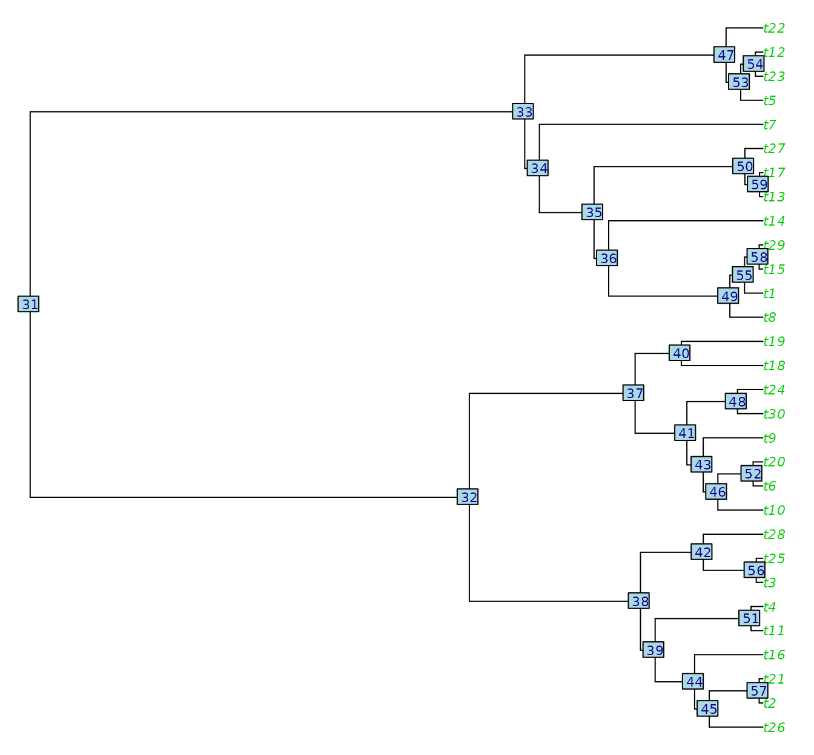

Format inputs prior to grafting
Maël Doré
2026-11-27
Source:vignettes/format_inputs.Rmd
format_inputs.Rmd
This vignette explains how to format the inputs
needed to graft missing lineages: the
missing_taxa_list that describes the taxa
to graft and the constraints on where they can be grafted, and,
optionally, the total_richness_per_clades
that accounts for the species that are neither in the backbone nor in
the list (i.e., unsampled species).
All the examples use the toy datasets shipped with
the package: a backbone phylogeny of 30 tips
(toy_backbone), tables in .csv format, and the
corresponding R objects.
For a full analysis from scratch, see the main workflow tutorial:
vignette("main_workflow").
For the tutorials listed by
theme, see: vignette("phylograftR").
1/ What does grafting need?
The missing_taxa_list
Each missing taxon is assigned to a clade of the backbone phylogeny, defined by tips: a pair of tips whose most recent common ancestor (MRCA) is the clade, or a single tip for a terminal branch. There are two types of missing lineages, grafted with two functions:
| Type | Grafting function | Clade item | Meaning |
|---|---|---|---|
| Missing taxa | graft_missing_taxa() |
Target_clade |
The taxon is grafted within its target clade. |
| Missing clades | graft_missing_clades() |
Sister_clade |
The taxa sharing the same sister clade are grafted together, as one missing clade attached to the stem branch of their sister clade. |
The missing_taxa_list is a list with the following
items. Every item is named after the taxa
($Taxon_name):
| Item | Used for | Content |
|---|---|---|
Taxon_name |
Both | Names of the taxa to graft. They must be unique and absent from the backbone. |
Target_clade or
Sister_clade
|
Taxa / Clades | One clade per taxon (a vector of tips). |
Target_clade_name or
Sister_clade_name
|
Both | (Optional) Names of the clades, to make outputs easier to read. |
include_target_clade_stem |
Taxa | (Optional) Can the taxon be grafted on the stem branch of its target clade? |
Excluded_subclades |
Taxa | (Optional) Subclades of the target clade where the taxon is known not to belong. |
exclude_subclades_stem |
Taxa | (Optional) Is the stem branch of each excluded subclade also excluded? |
allowed_states |
Both | (Optional) States of a stochastic map where the taxon can be grafted. See the tutorials on data types. |
The backbone phylogeny: phy
The backbone phylogeny (phy) is the
time-calibrated phylogeny on which the missing lineages are grafted: it
must be rooted, binary (no polytomies) and ultrametric.
All the clades used to define the constraints of the grafting are clades
of the backbone phylogeny:
- the target clade of a missing taxon: the clade within which it is grafted;
- the excluded subclades of a missing taxon: clades nested within its target clade where it must not be grafted;
- the sister clade of a missing clade: the clade of the backbone whose stem branch receives the missing clade.
Each of these clades can be a clade with several tips, or a single terminal branch, when it is defined by one tip only.
Clades are defined from the labels of the tips and the IDs of the nodes of the backbone:
- a pair of tips defines the clade subtended by their most recent common ancestor (MRCA). Any pair of tips whose MRCA is the clade can be used, so a clade can be written in several ways;
- a single tip defines the terminal branch of this tip;
- a node ID defines the clade subtended by this
internal node directly, with no need to pick tips. Node IDs are the
integers that follow the tip IDs (
1toNtip) and are displayed byape::nodelabels().
The toy backbone is shown below with its tip labels in
green and its node IDs in blue boxes. We will
use both in the following Sections. For instance, the clade of node
34 is also defined by the pair of tips t8 and
t7, whose MRCA is node 34, and the tip
t5 alone is the terminal branch of t5.
data(toy_backbone)
# Plot the backbone with the tip labels in green, and the node IDs in label boxes
ape::plot.phylo(toy_backbone, cex = 0.7, no.margin = TRUE, tip.color = "green3")
ape::nodelabels(cex = 0.7, frame = "rect", bg = "lightblue", col = "darkblue")
The total_richness_per_clades
The backbone is incomplete, and the missing taxa of the
missing_taxa_list are not necessarily all the missing
species: some species may be unsampled, i.e., neither
in the backbone nor in the list. Optionally, the grafting functions use
a total_richness_per_clades to account for
them: it gives the total number of species of some
clades of the backbone (their richness), and their number of
unsampled species is deduced from it:
total_richness = nb_backbone + nb_missing + nb_unsampled
with nb_backbone the tips of the backbone in the clade,
nb_missing the taxa of the missing_taxa_list
that belong to the clade, and nb_unsampled the unsampled
species. This information is used to estimate the sampling
fraction of the clades when fitting the birth-death
models used to draw the divergence times of the grafted
lineages (it requires method = "BD_clades" for the missing
taxa). Unsampled species are only used to fit the
rates: they are not grafted and do not need to be identified.
Only their count is deduced from the total_richness values
provided per clade:
- For a clade with a total richness provided,
nb_unsampled = total_richness - nb_backbone - nb_missing. - For a clade without a total richness (
NA, or not listed),nb_unsampledis the sum of the unsampled species of the largest clades nested within it that have a total richness provided (or 0 if there is none). Unsampled species of nested clades are never counted twice. - Without
total_richness_per_clades, all the clades are assumed to have no unsampled species.
The total richness is described in a table with the clades and their total richness, which is converted by dedicated functions: see Section 9.
The stochastic maps: simmap
Grafting can also be constrained by species
attributes (e.g., traits or biogeographic ranges) described by
stochastic character maps (simmap) of the
backbone summarizing the evolutionary history of traits or ranges along
branches. These stochastic maps are another input of the grafting
functions, used with the allowed_states of the
missing_taxa_list to further constrain grafting:
each taxon can only be grafted on the pieces of the available
branches that are in its allowed states. This combines with the
other constraints:
- For missing taxa, the available branches are those of the target clade, minus the excluded subclades, restricted to pieces in the allowed states.
- For missing clades, the available branch is the stem branch of the sister clade, restricted to pieces in the allowed states.
Preparing these maps is thoroughly explained in a dedicated tutorial:
vignette("prepare_stochastic_maps"). The use of
allowed states is only briefly introduced in
Section 6 of this vignette.
2/ Which way to build the list?
The missing_taxa_list can be obtained in three ways all
returning the same kind of object, validated against
the backbone. Whatever the way chosen, the list can then be
edited by hand afterward for finer level of
control.
| You have… | Use | Section |
|---|---|---|
| A taxonomy of the backbone tips, and the taxonomic groups of the missing taxa | build_missing_taxa_list_from_taxonomy() |
3 |
| A table that defines the clades directly (with pairs of tips or node IDs) |
build_missing_taxa_list() for a data.frame
already in R, or import_missing_taxa_list() for an external
file |
4 |
| A list written by hand in R, with node IDs defining the clades of interest | convert_nodes_to_tips() |
5 |
| Any of the above: a list already built that you want to fine-tune further (stem branches, excluded subclades, taxa to keep…) | Edit the list manually in R. This is available independently of the way the list was built (taxonomy, table/data.frame, or by hand) | 8 |
The taxonomy is the most convenient way to start, as it only requires the names of the groups. Defining the clades from a data.frame or an external table offers more fine-tuning, as any node of the backbone can be used.
3/ Use a taxonomy:
build_missing_taxa_list_from_taxonomy()
When the missing taxa are known by their taxonomic groups (families, genera, tribes…), they can be used to retrieve the defining tips of the clades of interest (i.e., target clades, excluded subclades, sister clades) directly from the taxonomy of the backbone tips.
When to use taxonomic tables?
Taxonomic tables are the go-to option for large phylogenies
with neatly defined taxonomic levels (e.g., Family, Subfamily,
Tribe, Genus). The taxonomy of the backbone is provided
once, and each taxon to graft only needs its own
taxonomic levels: the constraints (target clade, sister clade, excluded
subclades) are written with the names of the taxonomic
groups or of the taxonomic levels to use, and
the clades are retrieved from the phylogeny. The same taxonomic group is
therefore always the same clade, whatever the number of taxa, which
avoids the typos and inconsistencies of clades written taxon by taxon,
and the tables can be taken as such from a taxonomic database. The limit
is that only the taxonomic groups of the backbone table can be
used as clades: see Section 4 for finer control using
any clade and Section 8 for editing the
missing_taxa_list after building it.
Two tables are needed, and they can be imported from external files
(text or Excel) with import_taxonomic_table():
- the backbone table: one row per tip of the
backbone, one column per taxonomic level
(
type = "backbone"). - the missing taxa table: one row per taxon to graft,
with its taxonomic groups, and the constraints written with taxonomic
group names (
type = "missing_taxa").
# ------ Step 1: Look at the taxonomic tables ------ #
# Taxonomy of the backbone: the first column holds the tip labels (`Taxa`)
data(toy_backbone_taxonomic_table)
head(toy_backbone_taxonomic_table)
#> Taxa Family Subfamily Tribe Genus
#> 1 t26 Family_A Subfam_A2 Tribe_A2a <NA>
#> 2 t2 Family_A Subfam_A2 Tribe_A2a <NA>
#> 3 t21 Family_A Subfam_A2 Tribe_A2a <NA>
#> 4 t16 Family_A Subfam_A2 Tribe_A2a <NA>
#> 5 t11 Family_A Subfam_A2 Tribe_A2a <NA>
#> 6 t4 Family_A Subfam_A2 Tribe_A2a <NA>
# Description of the taxa to graft: one row per taxon
data(toy_missing_taxa_taxonomic_table)
toy_missing_taxa_taxonomic_table
#> Taxa Type Family Subfamily Tribe Genus Target_clade
#> 1 New_sp1 taxa Family_A <NA> <NA> <NA> Family
#> 2 New_sp2 taxa Family_A <NA> <NA> <NA> Family
#> 3 New_sp3 taxa Family_A <NA> <NA> <NA> Family
#> 4 New_sp4 taxa Family_B <NA> <NA> <NA> Family_B
#> 5 New_sp5 taxa Family_B Subfam_B1 <NA> <NA> Subfamily
#> 6 New_sp6 taxa Family_B Subfam_B2 Tribe_B2 <NA> Gen_2
#> 7 New_sp7 taxa Family_B Subfam_B2 Tribe_B2 <NA> Tribe
#> 8 Genus_a_sp1 clades Family_B Subfam_B1 <NA> Genus_a <NA>
#> 9 Genus_a_sp2 clades Family_B Subfam_B1 <NA> Genus_a <NA>
#> 10 Genus_b_sp1 clades Family_A Subfam_A1 Tribe_A1b Genus_b <NA>
#> Sister_clade Excluded_subclades include_target_clade_stem
#> 1 <NA> Subfam_A1;Tribe_A2a TRUE
#> 2 <NA> Tribe_A2a;Gen_3 TRUE
#> 3 <NA> <NA> FALSE
#> 4 <NA> <NA> NA
#> 5 <NA> Gen_1 TRUE
#> 6 <NA> <NA> NA
#> 7 <NA> <NA> FALSE
#> 8 Gen_1 <NA> NA
#> 9 Gen_1 <NA> NA
#> 10 Tribe <NA> NA
#> exclude_subclades_stem
#> 1 TRUE;FALSE
#> 2 FALSE;TRUE
#> 3 <NA>
#> 4 <NA>
#> 5 <NA>
#> 6 <NA>
#> 7 <NA>
#> 8 <NA>
#> 9 <NA>
#> 10 <NA>In the table of missing taxa:
-
Typestates whether the taxon is grafted within a target clade ("taxa"), or as part of a missing clade ("clades"). -
Target_cladeandSister_cladeare written with group names (e.g.,"Family_B"), or with the name of a taxonomic level (e.g.,"Family", meaning the family of the taxon, as written in the columnFamily). -
Excluded_subcladesare written the same way, several groups being separated by semicolons.
The tables can be imported from external files with the same checks against the backbone:
# ------ Step 2: Import the tables from external files (optional) ------ #
backbone_path <- system.file("extdata", "toy_backbone_taxonomic_table.csv", package = "phylograftR")
missing_taxa_path <- system.file("extdata", "toy_missing_taxa_taxonomic_table.csv",
package = "phylograftR")
# Import the taxonomy of the backbone, checked against the tips of the phylogeny
backbone_taxonomic_table <- import_taxonomic_table(file = backbone_path, type = "backbone",
phy = toy_backbone, verbose = FALSE)
# Import the description of the taxa to graft
missing_taxa_taxonomic_table <- import_taxonomic_table(file = missing_taxa_path, type = "missing_taxa",
phy = toy_backbone, verbose = FALSE)
# ------ Step 3: Build the missing_taxa_list ------ #
# Taxonomic names are converted into clades of the backbone phylogeny
missing_taxa_lists <- build_missing_taxa_list_from_taxonomy(
backbone_taxonomic_table = toy_backbone_taxonomic_table,
missing_taxa_taxonomic_table = toy_missing_taxa_taxonomic_table,
phy = toy_backbone,
verbose = FALSE)
# Since both types of taxa were provided, the output has one list per grafting function
names(missing_taxa_lists)
#> [1] "taxa" "clades"
str(missing_taxa_lists$taxa, max.level = 1)
#> List of 6
#> $ Taxon_name : chr [1:7] "New_sp1" "New_sp2" "New_sp3" "New_sp4" ...
#> $ Target_clade :List of 7
#> $ Target_clade_name : Named chr [1:7] "Family_A" "Family_A" "Family_A" "Family_B" ...
#> ..- attr(*, "names")= chr [1:7] "New_sp1" "New_sp2" "New_sp3" "New_sp4" ...
#> $ include_target_clade_stem: Named logi [1:7] TRUE TRUE FALSE NA TRUE NA ...
#> ..- attr(*, "names")= chr [1:7] "New_sp1" "New_sp2" "New_sp3" "New_sp4" ...
#> $ Excluded_subclades :List of 7
#> $ exclude_subclades_stem :List of 7
# Clades are written as pairs of tips, and named after their taxonomic groups
missing_taxa_lists$taxa$Target_clade$New_sp1
#> [1] "t26" "t19"
missing_taxa_lists$taxa$Target_clade_name
#> New_sp1 New_sp2 New_sp3 New_sp4 New_sp5 New_sp6
#> "Family_A" "Family_A" "Family_A" "Family_B" "Subfam_B1" "Gen_2"
#> New_sp7
#> "Tribe_B2"
# Taxa to graft as a clade have the same sister clade: they will be grafted together
missing_taxa_lists$clades$Sister_clade_name
#> Genus_a_sp1 Genus_a_sp2 Genus_b_sp1
#> "Gen_1" "Gen_1" "Tribe_A1b"
# Information on the groups used (clade node, number of tips, monophyly...) can be inspected
# in the attribute "taxonomic_groups"
attr(missing_taxa_lists, "taxonomic_groups")[, c("Group", "Level", "clade_node",
"n_tips_clade", "monophyletic")]
#> Group Level clade_node n_tips_clade monophyletic
#> 1 Family_A Family 32 17 TRUE
#> 2 Family_B Family 33 13 TRUE
#> 3 Subfam_B1 Subfamily 34 9 TRUE
#> 4 Gen_2 Genus 27 1 TRUE
#> 5 Tribe_B2 Tribe 53 3 TRUE
#> 6 Gen_1 Genus 50 3 TRUE
#> 7 Tribe_A1b Tribe 40 2 TRUE
#> 8 Subfam_A1 Subfamily 37 8 TRUE
#> 9 Tribe_A2a Tribe 39 6 TRUE
#> 10 Gen_3 Genus 14 1 TRUENon-monophyletic groups. A taxonomic group is not
always monophyletic in the backbone. The argument
non_monophyletic controls what is done:
-
"exclude"(default) excludes the group from the grafting constraints of the taxa that use it; -
"mrca"uses the clade of the MRCA of its tips (which includes tips of other groups); -
"error"stops.
The groups, their MRCA node and their monophyly are reported in the
attribute "taxonomic_groups", so you can check them.
The groups can only be those of the taxonomy. To use any clade of the backbone as a target, sister or excluded clade, define the clades directly with a data.frame (Section 4), or edit the list afterwards (Section 8).
4/ Build from a data.frame:
build_missing_taxa_list()
Taxonomic groups are convenient, but they have limits: a clade that
is not an identified taxonomic group cannot be used.
build_missing_taxa_list() converts a
data.frame into a missing_taxa_list, and gives you
full control over the constraints: clades are
defined directly on the backbone, from:
-
tips: a pair of tips whose MRCA is the clade
(
"t26, t18"), or a single tip; -
node IDs: the ID of the node of the backbone, as
shown by
ape::nodelabels()(e.g.,"34").
Any node of the backbone can therefore be a target, sister, or excluded clade, whatever the taxonomy. This option makes it much easier to fine-tune the grafting constraints, for instance to graft a taxon within a clade that is not named in any taxonomy, or to exclude a precise subclade. Tips and node IDs can be mixed between clades, but a single clade is defined by either tips or one node ID.
The data.frame has one row per taxon, and each column fills an item of the list:
-
Taxon_name: name of the taxon to graft. -
Target_clade(orSister_clade): tips used to retrieve the MRCA of the clade, separated by commas ("t26,t18"), or a node ID ("34"). -
Target_clade_name: (optional) name of the clade, used in printed reports ("Genus_1"). -
include_target_clade_stem:TRUEorFALSE. A blank cell means the default value of the grafting function. -
Excluded_subclades: tips (or node IDs) of the subclades. Several subclades are separated by semicolons, and the tips of one subclade by commas ("t10,t19;t26,t4"). -
Excluded_subclades_names: names of the subclades, separated by semicolons ("Tribe_A;Genus_3"). -
exclude_subclades_stem:TRUEorFALSEwith one value per excluded subclade, separated by semicolons ("TRUE;FALSE").
# ------ Step 1: Build the missing_taxa_list from a data.frame ------ #
# Write the table in R, with a mix of tips and node IDs (see the plot of the backbone)
my_table <- data.frame(Taxon_name = c("M1", "M2", "M3"),
Target_clade = c("34", "t5, t12", "t26, t18"),
Excluded_subclades = c("50", NA, "t10, t19; t26, t4"),
Excluded_subclades_names = c(NA, NA, "group_1; group_2"),
include_target_clade_stem = c(TRUE, FALSE, NA))
my_table
#> Taxon_name Target_clade Excluded_subclades Excluded_subclades_names
#> 1 M1 34 50 <NA>
#> 2 M2 t5, t12 <NA> <NA>
#> 3 M3 t26, t18 t10, t19; t26, t4 group_1; group_2
#> include_target_clade_stem
#> 1 TRUE
#> 2 FALSE
#> 3 NA
# The table is checked against the backbone phylogeny.
# Node IDs are converted into tips, and the conversions are printed
my_missing_taxa_list <- build_missing_taxa_list(data = my_table, phy = toy_backbone)
#> 2 node ID(s) converted into tips (a tip node gives its tip, an internal node gives one pair of tips with this MRCA node):
#> - node 34 (internal node, 9 tips) -> t8, t7 [Target_clade: M1]
#> - node 50 (internal node, 3 tips) -> t13, t27 [Excluded_subclades: M1]
str(my_missing_taxa_list, max.level = 1)
#> List of 4
#> $ Taxon_name : chr [1:3] "M1" "M2" "M3"
#> $ Target_clade :List of 3
#> $ include_target_clade_stem: Named logi [1:3] TRUE FALSE NA
#> ..- attr(*, "names")= chr [1:3] "M1" "M2" "M3"
#> $ Excluded_subclades :List of 3
# Node 34 is now defined by a pair of tips whose MRCA is node 34
my_missing_taxa_list$Target_clade$M1
#> [1] "t8" "t7"Any data.frame can be used, for instance a table loaded in R with
read.csv(). The function removes extra spaces and treats
blank cells and "NA" as missing values.
Import the table from an external file
The table can also be stored in an external file,
which is convenient to edit it with a spreadsheet, to share it, or to
keep it with the data of a project.
import_missing_taxa_list() is equivalent
to reading the file and giving the data.frame to
build_missing_taxa_list(): it uses the same table format,
the same checks and the same conversions of node IDs, and the clades are
defined directly on the backbone, with the same flexibility. Text files
(.csv, .tsv, .txt) and Excel
files (.xlsx, .xls) are supported, and the
format is chosen from the extension of the file.
# ------ Step 2 (optional): Import the table from an external file ------ #
# Path to a table provided with the package
file_path <- system.file("extdata", "toy_missing_taxa.csv", package = "phylograftR")
# One row per taxon, one column per item of the list
read.csv(file_path)
#> Taxon_name Target_clade Target_clade_name include_target_clade_stem
#> 1 New_sp1 t26,t18 Family_A TRUE
#> 2 New_sp2 t26,t18 Family_A TRUE
#> 3 New_sp3 t26,t18 Family_A FALSE
#> 4 New_sp4 t8,t22 Family_B NA
#> 5 New_sp5 t8,t7 Subfam_B1 TRUE
#> 6 New_sp6 t5 Gen_2 NA
#> 7 New_sp7 t5,t12 Tribe_B2 FALSE
#> Excluded_subclades Excluded_subclades_names exclude_subclades_stem
#> 1 t10,t19;t26,t4 Subfam_A1;Tribe_A2a TRUE;FALSE
#> 2 t26,t4;t30 Tribe_A2a;Gen_3 FALSE;TRUE
#> 3
#> 4
#> 5 t13,t27 Gen_1
#> 6
#> 7
# Import it as a missing_taxa_list, checked against the backbone phylogeny
missing_taxa_list <- import_missing_taxa_list(file = file_path, phy = toy_backbone)
# Items are named after the taxa, tips are split, and excluded subclades are named
str(missing_taxa_list, max.level = 1)
#> List of 6
#> $ Taxon_name : chr [1:7] "New_sp1" "New_sp2" "New_sp3" "New_sp4" ...
#> $ Target_clade :List of 7
#> $ Target_clade_name : Named chr [1:7] "Family_A" "Family_A" "Family_A" "Family_B" ...
#> ..- attr(*, "names")= chr [1:7] "New_sp1" "New_sp2" "New_sp3" "New_sp4" ...
#> $ include_target_clade_stem: Named logi [1:7] TRUE TRUE FALSE NA TRUE NA ...
#> ..- attr(*, "names")= chr [1:7] "New_sp1" "New_sp2" "New_sp3" "New_sp4" ...
#> $ Excluded_subclades :List of 7
#> $ exclude_subclades_stem :List of 7
# Example of the clades of one taxon
missing_taxa_list$Target_clade$New_sp1
#> [1] "t26" "t18"
missing_taxa_list$Excluded_subclades$New_sp1
#> $Subfam_A1
#> [1] "t10" "t19"
#>
#> $Tribe_A2a
#> [1] "t26" "t4"
missing_taxa_list$exclude_subclades_stem$New_sp1
#> Subfam_A1 Tribe_A2a
#> TRUE FALSE
# The result is the same as reading the file and building the list from the data.frame
identical(missing_taxa_list, build_missing_taxa_list(data = read.csv(file_path), phy = toy_backbone))
#> [1] TRUE
# The same list is provided as a dataset
data(toy_missing_taxa_list)
identical(missing_taxa_list, toy_missing_taxa_list)
#> [1] TRUETo import an Excel file, use the same function with
the sheet argument to select the sheet. It requires the
package readxl. Any other format (e.g., .ods,
or an export of an online spreadsheet) can be read with your own
function, provided in reader.
# Import an Excel file
missing_taxa_list <- import_missing_taxa_list(file = "my_missing_taxa.xlsx",
phy = toy_backbone, sheet = "missing_taxa")
# Import any other format with a reader function (e.g., '.ods')
missing_taxa_list <- import_missing_taxa_list(file = "my_missing_taxa.ods", phy = toy_backbone,
reader = readODS::read_ods)5/ Convert node IDs of a list:
convert_nodes_to_tips()
If you build the list directly in R, by hand
(without a table), clades can be defined by node IDs too, but the
grafting functions only accept tips.
convert_nodes_to_tips() converts all the node IDs of the
list into tips. It also checks the list against the backbone
tree to make sure that it is valid: items named after
$Taxon_name, node IDs and tips that exist in the backbone,
no mix of tips and node IDs in a clade… It is used internally by
build_missing_taxa_list(),
import_missing_taxa_list() and
build_missing_taxa_list_from_taxonomy(), so it is only
needed for lists written by hand.
# A list with clades defined by node IDs, tips, or both
list_with_nodes <- list(
Taxon_name = c("X1", "X2", "X3"),
Target_clade = list(X1 = 34, X2 = c("t5", "t12"), X3 = "t26"),
Excluded_subclades = list(X1 = list(group_1 = 50), X2 = NULL, X3 = NULL))
# Convert the node IDs into tips: the conversions are printed
list_with_tips <- convert_nodes_to_tips(list_with_nodes, phy = toy_backbone)
#> 2 node ID(s) converted into tips (a tip node gives its tip, an internal node gives one pair of tips with this MRCA node):
#> - node 34 (internal node, 9 tips) -> t8, t7 [Target_clade: X1]
#> - node 50 (internal node, 3 tips) -> t13, t27 [Excluded_subclades: X1]
list_with_tips$Target_clade$X1
#> [1] "t8" "t7"An internal node is converted into a pair of tips whose MRCA
is the node, chosen in a deterministic way. A clade that is
already defined by tips in the list is always defined by the same tips,
so the same clade has the same tips in all the objects. The
total_richness_per_clades (Section 9) can be
converted at the same time to keep this consistency:
convert_nodes_to_tips(list, phy, total_richness_per_clades = richness).
6/ Species attributes: allowed states
Columns of the table can also restrict the states of a
stochastic map where each taxon can be grafted. For instance,
allowed_states gives one or several states for each taxon,
separated by commas (blank cells mean no restriction for the taxon):
file_path <- system.file("extdata", "toy_missing_taxa_with_allowed_states.csv", package = "phylograftR")
read.csv(file_path)[, c("Taxon_name", "Target_clade_name", "allowed_states")]
#> Taxon_name Target_clade_name allowed_states
#> 1 New_sp1 Family_A red
#> 2 New_sp2 Family_A
#> 3 New_sp3 Family_A
#> 4 New_sp4 Family_B blue, green
#> 5 New_sp5 Subfam_B1 green
#> 6 New_sp6 Gen_2
#> 7 New_sp7 Tribe_B2 blue, red
# In this example, the allowed states define color (i.e., "red", "blue", "green") that evolve along the branches of a `simmap`
# and are used to contraint the grafting of each taxon depending on its allowed states.
missing_taxa_list_states <- import_missing_taxa_list(file = file_path, phy = toy_backbone, verbose = FALSE)
missing_taxa_list_states$allowed_states
#> $New_sp1
#> [1] "red"
#>
#> $New_sp2
#> NULL
#>
#> $New_sp3
#> NULL
#>
#> $New_sp4
#> [1] "blue" "green"
#>
#> $New_sp5
#> [1] "green"
#>
#> $New_sp6
#> NULL
#>
#> $New_sp7
#> [1] "blue" "red"These constraints are used only when a stochastic map
(simmap) is provided to the grafting function. Please refer
to the dedicated tutorials explaining how to prepare the maps
(vignette("prepare_stochastic_maps")) and how to use the
ranges and several traits (vignette("biogeographic_data")
and vignette("multiple_traits")) for more detailed
information.
7/ Both types of missing lineages in one table
A single table can describe both types of missing
lineages. With a column Type ("taxa"
or "clades"), each row fills the clade item of its type
(Target_clade or Sister_clade). Without
Type, the clade item filled (Target_clade or
Sister_clade) defines the type of the row. The builders
(import_missing_taxa_list(),
build_missing_taxa_list(),
build_missing_taxa_list_from_taxonomy()) then return a
named list with two elements, taxa and
clades:
# ------ Step 1: A table with both types ------ #
both_table <- data.frame(Taxon_name = c("M1", "M2", "M3", "M4"),
Type = c("taxa", "taxa", "clades", "clades"),
Target_clade = c("t26, t18", "t5, t12", NA, NA),
Sister_clade = c(NA, NA, "t10, t19", "t10, t19"),
Excluded_subclades = c("t26, t4", NA, NA, NA))
# ------ Step 2: Build the lists ------ #
lists <- build_missing_taxa_list(data = both_table, phy = toy_backbone)
names(lists)
#> [1] "taxa" "clades"
lists$taxa$Taxon_name # Taxa to graft with graft_missing_taxa()
#> [1] "M1" "M2"
lists$clades$Taxon_name # Taxa to graft with graft_missing_clades()
#> [1] "M3" "M4"
lists$clades$Sister_clade # M3 and M4 have the same sister clade: they form one missing clade
#> $M3
#> [1] "t10" "t19"
#>
#> $M4
#> [1] "t10" "t19"This list(taxa, clades) is the format expected by
graft_missing_taxa_and_clades(), which grafts both types in
one run, see vignette("combine_missing_taxa_and_clades").
The functions that check the grafting before or after
(check_grafting_plan(),
check_grafting_constraints(),
extract_grafting_info(),
extract_sampling_info()) and
convert_nodes_to_tips() accept it too. They return a named
list with the result of each type, see
vignette("check_grafting"). To graft the types separately,
use each element with the matching function: lists$taxa for
graft_missing_taxa() and lists$clades for
graft_missing_clades().
8/ Edit the list manually
The missing_taxa_list is a regular R list. Whatever the
way it was built (taxonomy, data.frame, external table, or by hand), it
can be edited directly in R before grafting, and the
same edit can also be applied to a list of both types of taxa
(Section 7), element by element. This is the final
level of fine-tuning and control: any item can be changed for
any taxon.
The rules to keep in mind are:
- every item must remain named after
$Taxon_nameand have one element per taxon (in the same order); - clades must be defined by tips: if you use node
IDs, convert them with
convert_nodes_to_tips()(see Section 5); - the list of a given type must keep its clade item
(
Target_cladefor the missing taxa,Sister_cladefor the missing clades).
# ------ Step 1: Edit the list ------ #
# Start from the list of taxa built from the taxonomy (Section 3)
taxa_list <- missing_taxa_lists$taxa
# Allow New_sp3 to be grafted on the stem branch of its target clade
taxa_list$include_target_clade_stem[["New_sp3"]] <- TRUE
# Add an excluded subclade (and exclude its stem) for New_sp4
taxa_list$Excluded_subclades[["New_sp4"]] <- list(Gen_1 = c("t13", "t27"))
taxa_list$exclude_subclades_stem[["New_sp4"]] <- c(Gen_1 = TRUE)
# Remove a taxon: subset all the items with the same selection
keep <- taxa_list$Taxon_name != "New_sp7"
taxa_list <- lapply(taxa_list, function (item) item[keep])
# ------ Step 2: Check the edited list ------ #
# The structure of the list and the availability of branches for grafting
# can be checked with check_grafting_plan() (see `vignette("check_grafting")`)
plan <- check_grafting_plan(phy = toy_backbone, missing_taxa_list = taxa_list, verbose = FALSE)
plan[, c("Taxon_name", "n_branches", "feasible")]
#> Taxon_name n_branches feasible
#> 1 New_sp1 8 TRUE
#> 2 New_sp2 22 TRUE
#> 3 New_sp3 33 TRUE
#> 4 New_sp4 20 TRUE
#> 5 New_sp5 12 TRUE
#> 6 New_sp6 1 TRUEThe checks stop with an explicit message if the edited list is not valid, for instance if a clade is defined by a node ID, or if an item does not have one element per taxon.
9/ The total richness of clades
The backbone is incomplete, and the missing taxa of the list are not
necessarily all the missing species: other species may also be
unsampled (neither in the backbone nor in the
missing_taxa_list). Optionally, the grafting functions use
a total_richness_per_clades to account for
them: it gives the total number of species of some
clades of the backbone (their richness), and their number of
unsampled species is deduced from it:
total_richness = nb_backbone + nb_missing + nb_unsampled
with nb_backbone the tips of the backbone in the clade,
nb_missing the taxa of the missing_taxa_list
that belong to the clade, and nb_unsampled the unsampled
species. This information is used to estimate the sampling
fraction of the clades when fitting the birth-death
models used to draw the divergence times of the grafted
lineages (it requires method = "BD_clades" for the missing
taxa). Unsampled species are only used to fit the
rates: they are not grafted and do not need to be identified.
Only their count is deduced from the total_richness values
provided per clade:
- For a clade with a total richness provided,
nb_unsampled = total_richness - nb_backbone - nb_missing. - For a clade without a total richness (
NA, or not listed),nb_unsampledis the sum of the unsampled species of the largest clades nested within it that have a total richness provided (or 0 if there is none). Unsampled species of nested clades are never counted twice. - Without
total_richness_per_clades, all the clades are assumed to have no unsampled species.
A table with the clades and their total richness is converted by
build_total_richness_per_clades() (internal data.frame) or
import_total_richness_per_clades() (external file). Both
need the missing_taxa_list (or the
list(taxa, clades)) to check the richness values against
the species of the backbone and of the list, and to make sure that the
clades are defined by the same tips.
# ------ Step 1: A table with the clades and their total richness ------ #
# Clades are written with their taxonomic names, as in the list built from the taxonomy.
# Use NA if the total richness is unknown
richness_table <- data.frame(Clade = c("Family_A", "Family_B", "Subfam_B1", "Tribe_B2"),
total_richness = c(25, NA, 14, 8))
# ------ Step 2: Build the total_richness_per_clades ------ #
# Check against the backbone and the lists of both types
richness_per_clades <- build_total_richness_per_clades(data = richness_table, phy = toy_backbone,
missing_taxa_list = missing_taxa_lists,
verbose = FALSE)
# With both types, the output has one element per type. Clades are defined by the same tips as in the lists
names(richness_per_clades)
#> [1] "taxa" "clades"
str(richness_per_clades, max.level = 2)
#> List of 2
#> $ taxa :List of 3
#> ..$ Target_clade :List of 7
#> ..$ Target_clade_name: chr [1:7] "Family_A" "Family_B" "Subfam_B1" "Tribe_B2" ...
#> ..$ total_richness : int [1:7] 25 NA 14 8 NA NA NA
#> $ clades:List of 3
#> ..$ Sister_clade :List of 7
#> ..$ Sister_clade_name: chr [1:7] "Family_A" "Family_B" "Subfam_B1" "Tribe_B2" ...
#> ..$ total_richness : int [1:7] 25 NA 14 8 NA NA NA
#> - attr(*, "richness_table")='data.frame': 7 obs. of 8 variables:
#> ..$ Clade_name : chr [1:7] "Family_A" "Family_B" "Subfam_B1" "Tribe_B2" ...
#> ..$ Clade_tips : chr [1:7] "t26, t19" "t8, t22" "t8, t7" "t5, t12" ...
#> ..$ total_richness_provided: num [1:7] 25 NA 14 8 NA NA NA
#> ..$ total_richness : num [1:7] 25 24 14 8 2 3 2
#> ..$ nb_backbone_species : num [1:7] 17 13 9 3 1 3 2
#> ..$ nb_missing_species : num [1:7] 4 6 3 2 1 0 0
#> ..$ nb_unsampled_species : num [1:7] 4 5 2 3 0 0 0
#> ..$ sampling_fraction : num [1:7] 0.84 0.792 0.857 0.625 1 ...
# ------ Step 3: Check the richness before grafting ------ #
# Expected richness and sampling fraction of each clade
attr(richness_per_clades, "richness_table")[, c("Clade_name", "total_richness", "nb_backbone_species",
"nb_missing_species", "nb_unsampled_species",
"sampling_fraction")]
#> Clade_name total_richness nb_backbone_species nb_missing_species
#> 1 Family_A 25 17 4
#> 2 Family_B 24 13 6
#> 3 Subfam_B1 14 9 3
#> 4 Tribe_B2 8 3 2
#> 5 Gen_2 2 1 1
#> 6 Gen_1 3 3 0
#> 7 Tribe_A1b 2 2 0
#> nb_unsampled_species sampling_fraction
#> 1 4 0.8400000
#> 2 5 0.7916667
#> 3 2 0.8571429
#> 4 3 0.6250000
#> 5 0 1.0000000
#> 6 0 1.0000000
#> 7 0 1.0000000The attribute "richness_table" gives the number of
species in the backbone, the missing species of the list, and the
unsampled species deduced from the total richness, and
the resulting sampling fraction of each clade. It can
be removed with return_richness_table = FALSE.
These values are expectations, computed before any
grafting. The table assumes that all the taxa to graft end up
in the clade where they belong. However, where taxa are actually grafted
varies among the grafted phylogenies (and among the stochastic maps, if
any): a taxon can be grafted on the stem of its target clade, which is
outside of the clade, or within a clade nested in its target clade,
which changes the richness of these nested clades. The effective
sampling fractions of the grafted phylogenies may therefore
differ from the expected ones. They can be extracted a
posteriori with extract_sampling_info(), using the
same total_richness_per_clades, on the output of the
grafting functions (see the tutorial on checks:
vignette("check_grafting")).
Import the richness data from an external file
A table in an external file is imported the same way, with the same checks:
file_path <- system.file("extdata", "toy_total_richness.csv", package = "phylograftR")
read.csv(file_path)
#> Target_clade Target_clade_name total_richness
#> 1 t26,t18 Family_A 25
#> 2 t8,t22 Family_B NA
#> 3 t8,t7 Subfam_B1 14
#> 4 t5 Gen_2 NA
#> 5 t5,t12 Tribe_B2 8
# The richness table of the toy dataset is defined with tips, and goes with the toy missing_taxa_list
richness <- import_total_richness_per_clades(file = file_path, phy = toy_backbone,
missing_taxa_list = toy_missing_taxa_list,
verbose = FALSE)
str(richness, max.level = 1)
#> List of 3
#> $ Target_clade :List of 5
#> $ Target_clade_name: chr [1:5] "Family_A" "Family_B" "Subfam_B1" "Gen_2" ...
#> $ total_richness : int [1:5] 25 NA 14 NA 8
#> - attr(*, "richness_table")='data.frame': 5 obs. of 8 variables:Define the clades of the richness table by node IDs
The clades of the total richness table can be defined by tips
or node IDs too (see Section 4). When the objects are
written by hand in R,
convert_nodes_to_tips() converts the node IDs of the
missing_taxa_list and of its
total_richness_per_clades in the same call (see Section
5), so that the same clade is defined by the same tips in
both objects:
# A missing_taxa_list written by hand with node IDs and tips (see Section 5)
list_with_nodes <- list(
Taxon_name = c("X1", "X2"),
Target_clade = list(X1 = 34, X2 = c("t5", "t12")))
# A total_richness_per_clades written by hand: node 34 is the clade of X1
richness_with_nodes <- list(Target_clade = list(34, c("t5", "t12")),
total_richness = c(14, 8))
# Convert both objects at the same time
converted <- convert_nodes_to_tips(missing_taxa_list = list_with_nodes, phy = toy_backbone,
total_richness_per_clades = richness_with_nodes)
#> 1 node ID(s) converted into tips (a tip node gives its tip, an internal node gives one pair of tips with this MRCA node):
#> - node 34 (internal node, 9 tips) -> t8, t7 [Target_clade: X1 | total_richness_per_clades$Target_clade: clade 1]
names(converted)
#> [1] "missing_taxa_list" "total_richness_per_clades"
# Node 34 is defined by the same tips in the list and in the total richness
converted$missing_taxa_list$Target_clade$X1
#> [1] "t8" "t7"
converted$total_richness_per_clades$Target_clade[[1]]
#> [1] "t8" "t7"With both types of missing lineages,
convert_nodes_to_tips() takes the
list(taxa, clades) and a
total_richness_per_clades of the same form, and converts
both parts with a shared record of the clades.
The richness is provided to the grafting functions in the argument
total_richness_per_clades: the list of the matching type to
graft_missing_taxa() or
graft_missing_clades(), and the
list(taxa, clades) to
graft_missing_taxa_and_clades().
10/ Common input errors
The functions check the inputs against the backbone and stop with explicit messages, before any grafting. Below are the most common cases.
# Helper to display the message of an error
show_error <- function (expr) cat("Error:", conditionMessage(tryCatch(expr, error = function (e) e)), "\n")
# A tip that is not in the backbone (e.g., a typo, or a wrong separator)
show_error(build_missing_taxa_list(data.frame(Taxon_name = c("M1", "M2"), Target_clade = c("t1, t999", "t5")),
phy = toy_backbone, verbose = FALSE))
#> Error: Some tips of 'Target_clade' are missing from the backbone phylogeny (check the spelling of the tips, or the separators):
#> - M1 (row 1): t999
# Tips and a node ID mixed in the same clade
show_error(build_missing_taxa_list(data.frame(Taxon_name = c("M1", "M2"), Target_clade = c("t1, 34", "t5")),
phy = toy_backbone, verbose = FALSE))
#> Error: 'Target_clade' of 'M1' mixes node IDs and tips in the same clade: t1, 34.
#> A clade is defined either by tips (labels with at least one other character than digits), or by one node ID, not both.
# A node ID that does not exist
show_error(build_missing_taxa_list(data.frame(Taxon_name = c("M1", "M2"), Target_clade = c("t8, t7", "900")),
phy = toy_backbone, verbose = FALSE))
#> Error: 'Target_clade' of 'M2' has an invalid node ID: 900. Node IDs of 'phy' are integers between 1 and 59 (1 to 30 for the tips).
# Duplicated names of taxa
show_error(build_missing_taxa_list(data.frame(Taxon_name = c("M1", "M1"), Target_clade = c("t8, t7", "t5")),
phy = toy_backbone, verbose = FALSE))
#> Error: 'Taxon_name' must be unique. Duplicated: M1
# A taxon to graft that is already a tip of the backbone
show_error(build_missing_taxa_list(data.frame(Taxon_name = c("t5", "M2"), Target_clade = c("t8, t7", "t5")),
phy = toy_backbone, verbose = FALSE))
#> Error: 'Taxon_name' must be absent from the backbone phylogeny (these are taxa to graft). Present in 'phy': t5
# A taxon without clade
show_error(build_missing_taxa_list(data.frame(Taxon_name = c("M1", "M2"), Target_clade = c("t8, t7", NA)),
phy = toy_backbone, verbose = FALSE))
#> Error: 'Target_clade' is empty for: 'M2' (row 2)Node IDs are recognized as text made only of digits: tip labels of the backbone must therefore include at least one other character than digits. If some tips are only digits, rename them first.
Next steps
With a missing_taxa_list (and optionally a
total_richness_per_clades), you are ready to graft:
- the missing taxa:
graft_missing_taxa(), seevignette("graft_missing_taxa"); - the missing clades:
graft_missing_clades(), seevignette("graft_missing_clades"); -
both types in one run:
graft_missing_taxa_and_clades(), seevignette("combine_missing_taxa_and_clades").
The grafting plan can be checked beforehand with
check_grafting_plan():
vignette("check_grafting").
If you wish to use species attributes to further
constraint grafting based on the evolutionary history of traits and/or
biogeographic ranges, you will need to provide stochastic
character maps under the simmap argument to
grafting functions. Please refer to the dedicated tutorials explaining
how to:
- prepare the stochastic maps: see
vignette("prepare_stochastic_maps"); - use biogeographic ranges as constraints (i.e., GIG
= geographically-informed grafting): see
vignette("biogeographic_data"); - use several traits as constraints: see
vignette("multiple_traits").